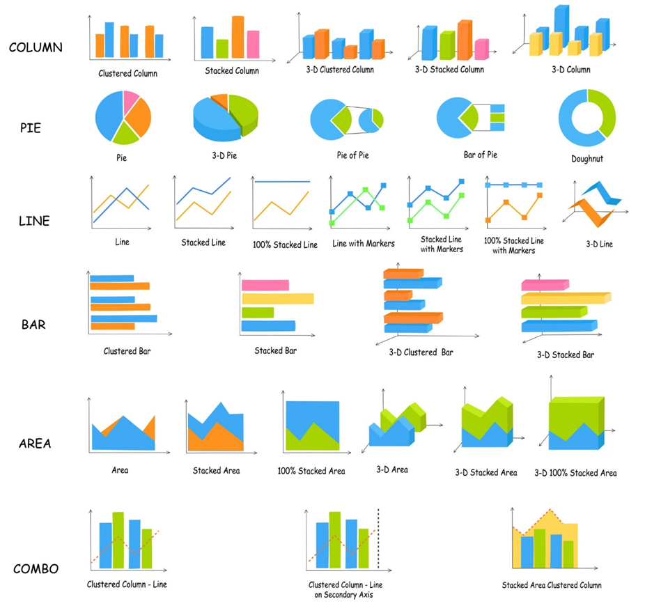
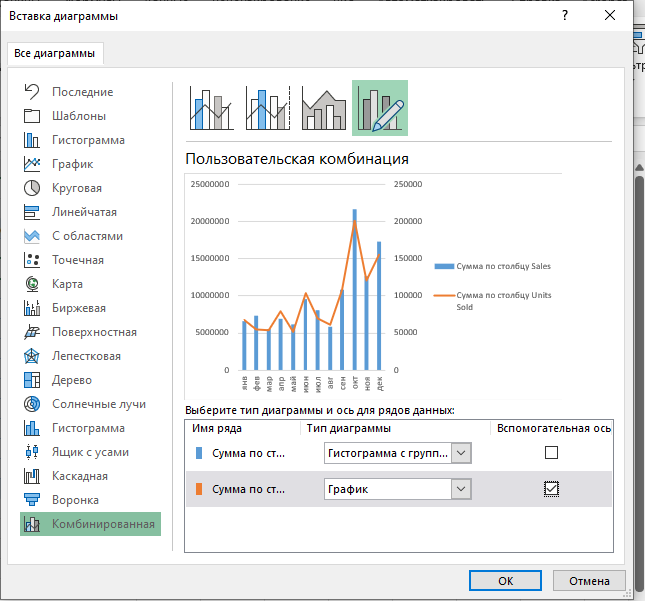

№ 7 зертханалық жұмыс
MS Excel құралдарымен экономикалық деректерді визуализациялау
🎯 Жұмыстың мақсаты
MS Excel бағдарламасында экономикалық деректерді визуализациялау әдістерін меңгеру; талдау міндетіне сәйкес диаграмма түрін таңдауды, жиынтық кестелер мен интерактивті сүзгілерді қолдануды, қаржы-экономикалық көрсеткіштердің динамикасы мен құрылымын бейнелеуді және басқарушылық шешімдерді қолдау үшін алынған визуализацияларды түсіндіруді үйрену.
✅ Күтілетін оқу нәтижелері
Зертханалық жұмысты орындағаннан кейін студент:
- талдау міндетіне қарай диаграмманың қолайлы түрін таңдай алуы;
- Financials деректер жиыны негізінде жиынтық кестелер құра алуы;
- жиынтық кестелер негізінде диаграммалар тұрғыза алуы;
- интерактивті сүзгілеу үшін Top-N сүзгісін және срездерді қолдана алуы;
- көрсеткіштердің уақыт бойынша динамикасын визуализациялай алуы;
- тренд сызығын және жылжымалы орташа мәнді қолдана алуы;
- негізгі және қосымша осьтерді пайдалана алуы;
- құрама диаграммалар мен Waterfall диаграммасын құра алуы;
- ықшам аналитикалық мини-дашборд жасай алуы;
- диаграммалар негізінде талдамалық қорытындылар тұжырымдай алуы.
📎 Қажетті материалдар
MS Excel 2019/2021/365 (Microsoft 365 ұсынылады).
Financials кестесі бар файл: Product, Country, Segment, Sales, Profit, Units Sold, Date, Year, Discounts, Gross Sales, COGS.
Бастапқы деректер Financials атауымен Excel кестесі түрінде рәсімделген.
Деректер типтері тексерілген: Sales, Profit, COGS — сандық; Date — күн; Year — сан.
Қажет болса, № 6 зертханалық жұмыстағы Analysis парағының нәтижелерін талдаудың қосымша негізі ретінде пайдалануға болады.
📘 Қысқаша теориялық мәліметтер
1. Экономикалық деректерді визуализациялау
Экономикалық деректерді визуализациялау сандық көрсеткіштерді графикалық түрде көрсетіп, айырмашылықтарды, үрдістерді, құрылымды және ауытқуларды анықтауға көмектеседі. Диаграмма түрі тек сыртқы көрінісіне емес, талдау міндетіне сәйкес таңдалады.

2. Санаттарды салыстыру
Бағандық және жолақтық диаграммалар елдер, өнімдер мен сегменттер сияқты жекелеген санаттарды салыстыруға ыңғайлы. Top-N сүзгісі ең жоғары көрсеткіштерге назар аударуға мүмкіндік береді.
3. Динамиканы визуализациялау
Сызықтық диаграмма көрсеткіштің уақыт бойынша өзгеруін көрсетеді. Тренд сызығы өзгерістің жалпы бағытын бағалауға көмектеседі, ал жылжымалы орташа мән қысқа мерзімді ауытқуларды тегістейді. Бұл жұмыста кезеңі 3 болатын жылжымалы орташа мән пайдаланылады.
4. Интерактивті визуализация
Срез (Slicer) — жиынтық кестені және онымен байланысты диаграмманы интерактивті сүзгілеу элементі. Срездегі мәнді таңдау бастапқы деректерді өзгертпей, визуализацияны жылдам қайта құруға мүмкіндік береді.
5. Құрама диаграмма
Құрама диаграмма әртүрлі өлшем бірліктері бар көрсеткіштерді салыстыру үшін қолданылады. Бұл жұмыста Sales негізгі ось бойынша бағандармен, ал Units Sold қосымша ось бойынша сызықпен көрсетіледі.
6. Waterfall диаграммасы
Waterfall («Сарқырама») диаграммасы оң және теріс құрамдастардың қорытынды көрсеткішке бірізді әсерін көрсетеді. Жұмыста Gross Sales → Discounts → Sales → COGS → Profit тізбегі талданады.
💼 Практикалық жағдай
Талдаушы № 6 зертханалық жұмыста қолданылған Financials кестесі негізінде компанияның қаржылық деректері бойынша көрнекі есеп дайындауы қажет. Жетекші елдер мен сегменттерді анықтау, сату динамикасын зерттеу, түсімді сатылған бірліктер санымен салыстыру және жеңілдіктер мен өзіндік құнның соңғы пайдаға әсерін көрсету талап етіледі. Нәтижесінде талдау мен басқарушылық шешімдер қабылдауға жарамды экономикалық визуализациялар жүйесі жасалуы тиіс.
🛠️ Жұмысты орындау тәртібі
1-тапсырма. Елдер бойынша сату көлемі (Top-3) — бағандық диаграмма
- Financials дереккөзін пайдаланып, жаңа Viz_CountrySales парағына жиынтық кесте енгізіңіз.
- Өрістерді баптаңыз: Country — «Жолдар» аймағы; Sales — «Мәндер» аймағы; Year — «Сүзгілер» аймағы.
- Sales мәндерін кему ретімен сұрыптаңыз.
- «Мәндер бойынша сүзгі → Алғашқы 10…» пәрменін таңдап, 10 санын 3-ке ауыстырыңыз.
- Бағандық диаграмманы (Clustered Column) енгізіңіз.
- Sales by Country (Top-3, Year) тақырыбын қойып, ақшалай пішімді/мыңдықтарды, деректер белгілерін және тор сызықтарын баптаңыз.
- Segment бойынша срез қосыңыз: жиынтық кестені таңдаңыз → «Жиынтық кестені талдау» (PivotTable Analyze) → «Срезді кірістіру» (Insert Slicer) → Segment → OK.
Нәтиже: срезден мән таңдалғанда (мысалы, Government немесе Midmarket) жиынтық кесте мен байланысты диаграмма автоматты түрде сүзгіленуі тиіс.
Талдамалық қорытынды: көшбасшы елді анықтап, басқа сегментті таңдағанда Top-3 құрамы өзгеретінін тексеріңіз.
2-тапсырма. Сегменттер бойынша пайда — өз бетінше орындау
Viz_SegmentProfit парағын жасаңыз. Profit көрсеткішін Segment бойынша бейнелейтін жиынтық кесте мен көлденең жолақтық диаграмманы өз бетінше құрыңыз. Сұрыптау мен рәсімдеуді орындаңыз.
Талдамалық қорытынды: пайдасы ең жоғары және ең төмен сегменттерді анықтап, нәтижелер арасындағы айырмашылықтарды бағалаңыз.
3-тапсырма. Айлар бойынша сату динамикасы — сызықтық график және тренд сызығы
- Viz_MonthlySales парағында жиынтық кесте жасаңыз.
- Date өрісін «Жолдар» аймағына орналастырып, күндерді айлар мен жылдар бойынша топтастырыңыз.
- Sales өрісін «Мәндер» аймағына, ал Country немесе Segment өрісін таңдауыңыз бойынша «Сүзгілер» аймағына орналастырыңыз.
- Сызықтық диаграмма құрыңыз.
- Сызықтық тренд сызығын (Linear Trendline) қосыңыз.
- Кезеңі 3 болатын жылжымалы орташа мәнді (Moving Average) қосыңыз.
- X осіндегі күн белгілері тым тығыз орналаспайтындай етіп баптаңыз; қажет болса, Y осін мың немесе миллион бірліктерімен рәсімдеңіз.
Талдамалық қорытынды: ұзақ мерзімді үрдісті, ықтимал маусымдылықты және күрт ауытқуларды бағалаңыз. Жалпы үрдістен күрт ауытқу қосымша талдауды қажет етеді және өздігінен қатенің бар екенін дәлелдемейді.
4-тапсырма. Sales vs Units Sold құрама диаграммасы
- Viz_SalesUnits парағында жиынтық кесте жасаңыз.
- Date өрісін «Жолдар» аймағына орналастырып, күндерді айлар бойынша топтастырыңыз; қажет болса, жылдарды қосыңыз.
- Sales және Units Sold өрістерін «Мәндер» аймағына орналастырыңыз. «Қосынды» операциясы қолданылғанына көз жеткізіңіз.
- Product өрісін «Сүзгілер» аймағына орналастырып, бір өнімді, мысалы Velo немесе Carretera, таңдаңыз.
- Құрама диаграмманы (Combo Chart) енгізіңіз.
- Sales үшін «Топтастырылған бағандық диаграмманы» және негізгі осьті; Units Sold үшін «Сызықтық графикті» және қосымша осьті таңдаңыз.
- Деректер белгілерін, түсінікті тақырыпты және ось атауларын қосыңыз: «Түсім» және «Бірліктер саны».

Талдамалық қорытынды: Sales және Units Sold көрсеткіштері бір бағытта өзгеретінін көрнекі түрде бағалаңыз. Синхронды өзгеріс сатылған бірліктер саны мен түсім арасында байланыс болуы мүмкін екенін көрсетеді, бірақ тәуелділікті статистикалық растау үшін қосымша сандық талдау қажет. Қатарлар алшақтаған жағдайда Discount Band, Sale Price және сату құрылымының ықтимал әсерін қарастырыңыз.
5-тапсырма. Waterfall («Сарқырама») диаграммасын құру
Viz_Waterfall парағын жасап, қосалқы кестені дайындаңыз:
| Бап | Мән | Экономикалық мағынасы |
|---|---|---|
| Gross Sales | =СУММ(Financials[Gross Sales]) | Жеңілдіктерге дейінгі жалпы түсім; бастапқы қорытынды. |
| Discounts | =-СУММ(Financials[Discounts]) | Жеңілдіктер түсімді азайтады. |
| Sales | =СУММ(Financials[Sales]) | Жеңілдіктерден кейінгі түсім; аралық қорытынды. |
| COGS | =-СУММ(Financials[COGS]) | Өзіндік құн қаржылық нәтижені төмендетеді. |
| Profit | =СУММ(Financials[Profit]) | Соңғы пайда; соңғы қорытынды. |
- «Бап» және «Мән» бағандарын таңдап, Waterfall («Сарқырама») диаграммасын енгізіңіз.
- Gross Sales көрсеткішін бастапқы қорытынды (Set as total) ретінде белгілеңіз.
- Sales көрсеткішін аралық қорытынды ретінде белгілеңіз.
- Profit көрсеткішін соңғы қорытынды ретінде белгілеңіз.
- Discounts және COGS теріс өзгерістер ретінде көрсетілгеніне көз жеткізіңіз.
Талдамалық қорытынды: Gross Sales пен Profit арасындағы айырманы бағалаңыз; Discounts немесе COGS құрамдастарының қайсысы қаржылық нәтижені көбірек төмендететінін анықтап, қай құрамдасқа назар аудару керектігін тұжырымдаңыз.
6-тапсырма. Мини-дашборд құру
Dashboard парағын жасаңыз. Оған ең ақпаратты визуализацияларды орналастырыңыз, мысалы: Top-3 Country Sales, Segment Profit, Monthly Sales және Sales vs Units Sold. Жалпы тақырып пен қолжетімді интерактивті сүзгілерді/срездерді қосыңыз. Экранды шамадан тыс толтырмаңыз: визуализациялар тураланған, оқуға ыңғайлы және логикалық топтастырылған болуы тиіс.
Қорытынды мини-дашборд негізгі нәтижелерді жылдам бағалауға мүмкіндік беріп, Power BI жүйесіндегі аналитикалық панельдермен кейінгі жұмысқа дайындық кезеңі болуы тиіс.
📁 Жұмыс нәтижесіне қойылатын талаптар
- Financials бастапқы кестесі бар бір MS Excel жұмыс кітабы.
- Елдердің Top-3 көрсеткіші және Segment срезі бар Viz_CountrySales парағы.
- Сегменттер бойынша пайданың өз бетінше жасалған визуализациясы бар Viz_SegmentProfit парағы.
- Сату динамикасы, тренд сызығы және жылжымалы орташа мәні бар Viz_MonthlySales парағы.
- Құрама диаграмма мен қосымша осі бар Viz_SalesUnits парағы.
- Қорытындылары дұрыс бапталған Viz_Waterfall парағы.
- Ең ақпаратты визуализациялардың ықшам жиыны бар Dashboard парағы.
- Түсінікті тақырыптар, белгілер, сан пішімдері және қысқаша талдамалық қорытындылар.
❓ Бақылау сұрақтары
- Экономикалық деректерді визуализациялау дегеніміз не?
- Неліктен диаграмма түрі талдау міндетіне сәйкес болуы керек?
- Бағандық диаграмманы қашан қолданған орынды?
- Сызықтық диаграмма қандай міндеттер үшін қолданылады?
- Тренд сызығы нені көрсетеді?
- Жылжымалы орташа мән не үшін қолданылады?
- Срез дегеніміз не және ол жиынтық кестемен қалай байланысты?
- Top-N сүзгісі не үшін қолданылады?
- Қосымша осьті қашан қолдану қажет?
- Құрама диаграмма не үшін қолданылады?
- Waterfall диаграммасы қандай экономикалық ақпаратты көрсетуге мүмкіндік береді?
- Аналитикалық дашборд құру кезінде қандай талаптарды сақтау қажет?
📊 Бағалау критерийлері
| Критерий | Балл |
|---|---|
| Елдердің Top-3 көрсеткіші және интерактивті срез | 15 |
| Сегменттер бойынша пайданың өз бетінше визуализациясы | 10 |
| Сату динамикасы, тренд және жылжымалы орташа мән | 15 |
| Sales vs Units Sold құрама диаграммасы | 15 |
| Waterfall диаграммасы және қорытындылардың дұрыс көрсетілуі | 15 |
| Мини-дашборд | 15 |
| Визуализациялар бойынша талдамалық қорытындылар | 10 |
| Рәсімдеу сапасы және оқуға ыңғайлылығы | 5 |
| Барлығы | 100 |
Келесі бөлімде біліміңізді интерактивті тест арқылы тексеріңіз.
Біліміңізді тексеріңіз
Орындаған зертханалық тапсырма бойынша сұрақтарға жауап беріңіз. Әр сұраққа бір дұрыс жауапты таңдаңыз.